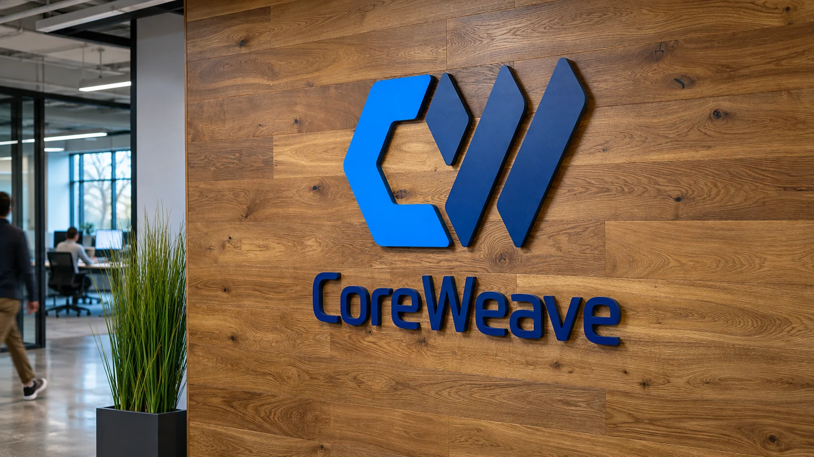

CoreWeave Raises 2026 Outlook as AI Demand Pushes Spending Higher
CoreWeave lifted its 2026 revenue outlook after third-quarter sales more than doubled, while higher capital spending and interest costs keep funding in focus.

CoreWeave raised its full-year 2026 revenue outlook after reporting a sharp increase in third-quarter sales, offering investors fresh evidence that demand for AI computing remains strong. The company also lifted its capital expenditure forecast, underscoring the scale of funding required to turn that demand into data-center capacity.
The Nvidia-backed cloud provider reported third-quarter revenue of $3.66 billion, compared with $1.37 billion a year earlier. It raised its 2026 revenue guidance to a range of $13.0 billion to $13.3 billion, from its previous range of $12.4 billion to $13.2 billion. CoreWeave also increased its forecast for adjusted operating income to $1.275 billion to $1.375 billion, a 26% increase at the midpoint from its earlier outlook.
The figures strengthen one part of the AI investment case: customers are paying for more infrastructure. They do not settle the separate question of whether providers can finance that infrastructure at a cost that leaves attractive returns after interest, depreciation, power and operations.
That distinction matters because the company expects full-year capital expenditures of $37 billion to $39 billion, up from a previous range of $35 billion to $39 billion. Management said it expects to deploy infrastructure and deliver it to customers sooner than planned. Its year-end forecast for active power remains above 1.85 gigawatts, while its annualized revenue run-rate target for the end of 2026 rose to $20 billion to $21 billion.
Demand is converting into a larger operating footprint
The guidance connects customer demand to physical buildout. CoreWeave rents computing capacity built around high-performance processors and data-center infrastructure. To expand, it must secure servers, buildings, power and financing, then bring those resources online in time to meet customer schedules.
CoreWeave defines annualized run-rate revenue as the final month’s revenue multiplied by 12. That measure describes a current pace; it is not a full-year revenue forecast.
Investors have been weighing these operational details against financing concerns across AI infrastructure. TTN’s earlier report on credit-market pressure around CoreWeave’s AI expansion examined why a large customer backlog does not eliminate the need to manage debt maturities and cash timing. The new earnings report adds a stronger revenue trajectory to that discussion, while the higher investment forecast keeps the financing question relevant.
The company expects fourth-quarter interest expense of $1.05 billion to $1.15 billion. Its revenue backlog stood at $132.5 billion at September-end, up from $104 billion three months earlier, and CEO Mike Intrator said $9 billion in customer prepayments and deposits were expected over the following three months, Reuters reported. These figures support the funding case, but a backlog is not cash on hand and prepayments remain tied to customer contracts.
Strong growth still has to produce durable returns
Revenue growth is only one measure of performance for an infrastructure company. A customer contract may provide visibility, but the company still has to build and operate capacity efficiently. Delays can postpone revenue while leaving financing costs and other commitments in place. If customers change schedules or demand less capacity than expected, the provider may have to reassess how quickly new facilities can be filled.
Faster deployment can improve returns if capacity arrives when customers need it and utilization rises. CoreWeave’s guidance signals that management expects this acceleration, but it does not guarantee each project will meet its schedule or return target.
The company’s results also form part of a broader investment pattern in which suppliers, chipmakers and AI developers are taking direct financial stakes in one another. TTN recently covered TSMC’s planned investments in Anthropic and OpenAI, another sign that the sector’s commercial relationships increasingly combine supply agreements, capital and demand expectations.
Such cross-investments may align incentives, but they also connect more balance sheets. Contracted demand is not the same as cash collected, and funding pressure at one partner can affect others.
The next questions concern execution and cash
CoreWeave’s higher outlook is a positive demand signal, and the company has raised both its revenue and adjusted operating-income ranges. The increase in planned capital spending shows that growth requires continued investment rather than only software scaling. The company’s near-term interest expense forecast makes financing costs another central part of the earnings story.
The coming quarters will show whether faster deployment turns into recognized revenue and cash, and whether operating performance keeps pace with the expanding asset base. Demand has strengthened, but the model remains capital-intensive. The test is whether CoreWeave can deliver capacity on schedule, collect for its use and finance expansion without interest and infrastructure costs consuming too much of the returns.
Sources (3)
For informational purposes. This article is not investment advice.